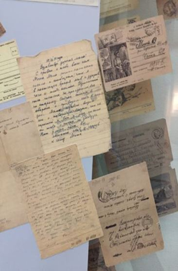
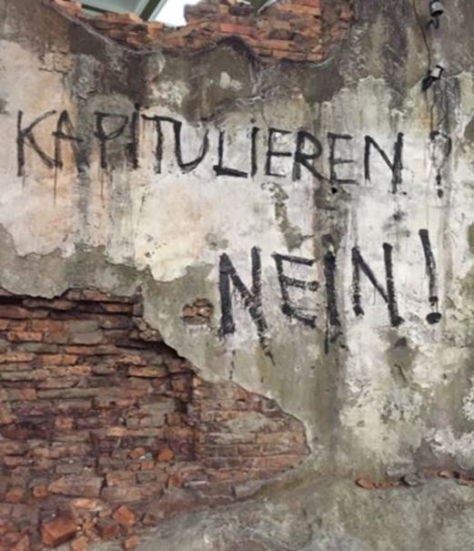

Salut, cher voyageur, chère voyageuse. Je suis très heureuse de vous retrouver dans ce nouvel article. Aujourd’hui, je vous amène avec moi pour une visite, et pas n’importe laquelle : la visite du musée de la Grande Guerre Patriotique de Moscou.
Je vous propose 6 bonnes raisons d’aller faire un tour dans ce fabuleux endroit quand vous serez à Moscou. C’est parti ?
1 – Plongez dans la grande histoire de la Russie !
Je pense qu’avec ce musée, les russes ont fait de leur histoire, un véritable chef-d’œuvre. Comme vous vous en doutez, le musée de la Grande Guerre Patriotique retrace les combats de la seconde guerre mondiale.
Le musée a été inauguré le 9 mai 1995, soit 50 ans après la fin de la guerre. Oui peut être que vous ne le savez pas, en Russie « la date anniversaire » c’est le 9 mai et non le 8 !
Lors de son inauguration, 55 chefs d’États étaient présents dont le président américain et le premier ministre anglais. Ils ont tous deux salués la beauté de l’édifice. J’aime beaucoup ce geste.
D’ailleurs, cela me fait penser à une vidéo que vous avez peut-être déjà vue : le fou rire de Bill Clinton et de Boris Eltsine ? Personnellement, je trouve ce moment absolument superbe !
Revenons au musée en lui-même. Quand vous savez que plus de 26 millions de soviétiques sont morts lors de la seconde guerre mondiale, soit plus de 16 % de la population soviétique de 1939… vous comprenez mieux à quel point faire revivre ces moments tragiques et forts, sont essentiels pour le peuple russe !
C’est pourquoi, vous ne serez pas étonné de la magnificence du lieu et de la multitude de détails, d’objets et de témoignages que vous trouverez à l’intérieur.
2 – Remontez le temps !
C’est vrai, le musée propose un véritable voyage dans le temps. Tout se passe au niveau -1 du musée et dans un immense couloir. Des pièces se succèdent et c’est tout autant de films qui se jouent. Vous voyagez à Moscou, à Saint-Pétersbourg, à Kiev, à Berlin…
Prenons la première « scène », c’est la reconstitution de la première bataille gagnée face à l’armée allemande : la bataille de Moscou.
La reconstitution est extraordinaire. Vous avancez dans la salle complètement hypnotisé par les peintures murales. Vous vous approchez du balcon et au sol vous voyez un véritable champ de bataille : des morceaux de chars, de la végétation, des munitions, des balustrades défoncées… c’est beau et terrible à la fois. Un frisson pourrait vous parcourir devant ce spectacle.
Rien que de vous écrire ces mots, j’en ai la gorge serrée. J’ai visité ce musée par deux fois déjà, et à chaque fois je me dis : « Quelle chance j’ai, de ne pas avoir vécu ça… » Les peintures murales semblent tellement réalistes que vous ressentez l’horreur, la peur et la rage…
Je vous conseille de bien prendre le temps de vous immerger. Je n’ai jamais vu de reconstitution aussi passionnante. L’histoire, les émotions qui se dégagent de ces salles sont presque palpables !
3 – Découvrez la pièce la plus solennelle et la plus somptueuse au monde !
À l’étage du musée se trouve surement la plus belle salle que j’ai jamais vue. Si, si, même le merveilleux Louvre ou le majestueux château de Versailles ne m’ont pas autant éblouie, c’est pour vous dire…
Cette pièce, c’est un mémorial en hommage aux soldats tombés au combat ! Une statue s’élève au milieu, sous un dôme extraordinaire. Tout est magnifique, tout est tellement calme. Vous vous sentiriez tellement petit…
4 – Observez des centaines d’objets datant de la seconde guerre mondiale.
À l’étage, vous pouvez aussi admirer une multitude d’objets, comme : des photos, des films, des bouts de journaux, des costumes, des instruments… C’est extraordinaire !!
Peut-être que vous serez vous aussi sensible à la mise en valeur du rôle des femmes dans la guerre. Savez-vous que l’armée soviétique comptait beaucoup plus de femmes dans leur rang que toutes les autres armées en ce temps-là ? Il y avait même des escadrons de snipers, constituées entièrement de femmes. Il y a eu aussi des femmes conductrices de chars… C’est incroyable, non ? Si cela vous intéresse je pourrais vous écrire un article spécialement à ce sujet.
Autre chose a attiré mon regard et ce sera peut-être le cas pour vous aussi : des affiches sur le « front uni ». C’est à dire : l’URSS, les Etats-Unis et le Royaume-Uni combattant ensemble. Je trouve cette affiche étonnante. Je n’en avais jamais vue.
Si vous êtes aussi sensible que moi, peut être verserez-vous une petite larme devant les correspondances entre des fils et leur mère pendant la guerre…
« Vive le Front Uni des peuples libres contre les envahisseurs fascistes! »

5 – Faites un petit tour à Berlin !
Selon moi, c’est la cerise sur le gâteau… Dans ce musée, il vous est possible de vous téléporter à Berlin le temps de quelques dizaines de mètres. Je suis sûre que vous vous demandez : Mais comment ?
Tout simplement en traversant le plus beau décor que vous aurez surement jamais vu. Je vous jure la première fois que je suis arrivée à cet endroit du musée, j’ai failli fondre en larmes…
Comment vous dire… Vous traversez un appartement complètement détruit suite à des bombardements. Vous voyez des restes d’affiches sur les murs, des cadres, un piano, une chaise en miettes… Et dans une petite pièce de l’appartement : une énorme mitraillette avec toutes les douilles sur le sol…
Puis, vous sortez de l’appartement éventré et vous vous retrouvez « dans la rue ». Il y a des colonnes ornées de graffitis en alphabet cyrillique. C’est gris, c’est noir. Vous pouvez presque respirer la poussière et entendre le fracas des combats.
Il y a cette phrase bouleversante écrite en allemand : « Kapitulieren nein » (ne pas capituler).
D’ailleurs, vous pourrez aussi remarquer la présence d’une église orthodoxe, d’une mosquée et d’une synagogue dans ce même parc. J’ai une petite préférence pour l’église orthodoxe «Saint-Georges le victorieux». Je la trouve superbe !!! Pas vous ?

6 – Dénichez les autres bijoux du Parc de la Victoire (Парк Победы- park pabiedi)
En fait, votre aventure commence bien avant de rentrer dans le musée. Tout simplement parce que ce dernier, trône dans un superbe parc : le parc de la victoire.
Juste devant le musée, vous verrez le magnifique monument de Saint-Georges, terrassant le dragon. Vous serez bouche bée devant la grandeur de cette statue. Vous pourriez aussi être quelque peu perplexe. Hé oui… une référence religieuse du temps de l’URSS ? C’est étrange n’est-ce pas ?
D’ailleurs, vous pourrez aussi remarquer la présence d’une église orthodoxe, d’une mosquée et d’une synagogue dans ce même parc. J’ai une petite préférence pour l’église orthodoxe «Saint-Georges le victorieux». Je la trouve superbe !!! Pas vous ?
Et surement la plus belle surprise, c’est l’arc de triomphe !
Il est tout simplement magnifique. Et devinez quoi ? Il commémore la conquête russe de Paris. Il a été érigé 1834 ! Apparemment, Staline l’avait démantelé en 1936 lors d’une restructuration du centre-ville de Moscou. Mais il a été reconstruit après la seconde guerre mondiale près du Parc de la Victoire.
Dernière petite anecdote. Saviez-vous que le Parc de la Victoire et donc le musée de la Grande Guerre Patriotique se situent sur le Mont Poklonaïa. J’ai lu que Napoléon a attendu en vain les clés du Kremlin pile poil à cet endroit. Intéressant, non ?
J’aime vraiment beaucoup ce musée car il a le pouvoir de nous émerveiller et de nous terrifier, tout en nous faisant sentir terriblement petit et chanceux. Le tout à la fois !
Peut-être qu’à la lecture de ces 6 raisons, vous avez envie de vous ruer à Moscou et plus particulièrement, dans ce musée.
Oui parce que tout le musée est en russe et il n’y a pas d’audio guide de disponible. Croyez-moi, pour vous plonger dans l’histoire, ce n’est pas vraiment un problème.
Voilà, cher voyageur, chère voyageuse, votre visite se termine ici. J’espère que ça vous a plu et que vous avez voyagé de chez vous.
« Par curiosité, quelle est la raison qui vous donne le plus envie de découvrir ce musée ? »
Je vous dis à très bientôt et en attendant, je vous encourage à rester curieux du monde qui vous entoure.

Partager cette page